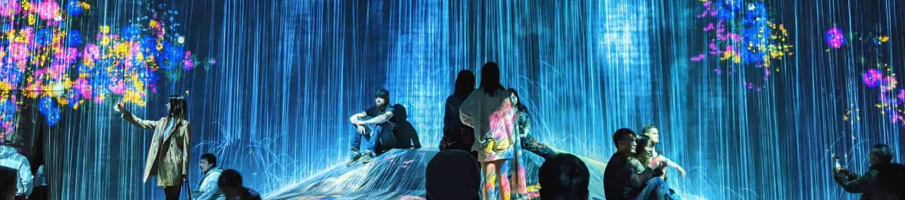

DIGITAL ART
By groupD



INTRODUCTION
groupD

テーマの設定理由
デジタルアートはチームラボなどの普段の私たちの生活
になじみやすい分野だが授業で今まで深く扱っていなか
ったのでこの機会にどのようにしてデジタルアートが始
まったのか、現在どのようなところに活用されているの
か深く調べてみようと思った。
になじみやすい分野だが授業で今まで深く扱っていなか
ったのでこの機会にどのようにしてデジタルアートが始
まったのか、現在どのようなところに活用されているの
か深く調べてみようと思った。
デジタルアートの定義
デジタルアートとは、パソコンやタブレットなどのデジタル
機器を駆使して作られたアート作品。単に絵画、イラストレ
ーション、プロジェクションマッピングだけを指すものでは
なく電子音楽という電子楽器を使って作曲された音楽やVFX
という映像作品にCGなどを組み込み合成などを作られた作品
などもデジタルアートと呼ばれる。
機器を駆使して作られたアート作品。単に絵画、イラストレ
ーション、プロジェクションマッピングだけを指すものでは
なく電子音楽という電子楽器を使って作曲された音楽やVFX
という映像作品にCGなどを組み込み合成などを作られた作品
などもデジタルアートと呼ばれる。